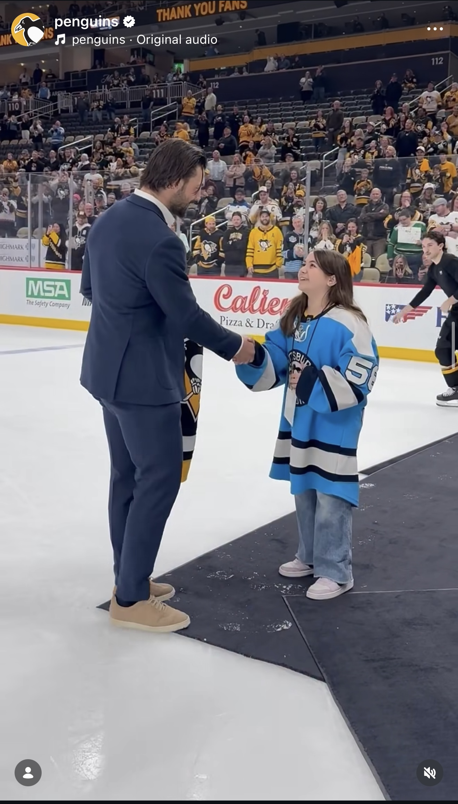
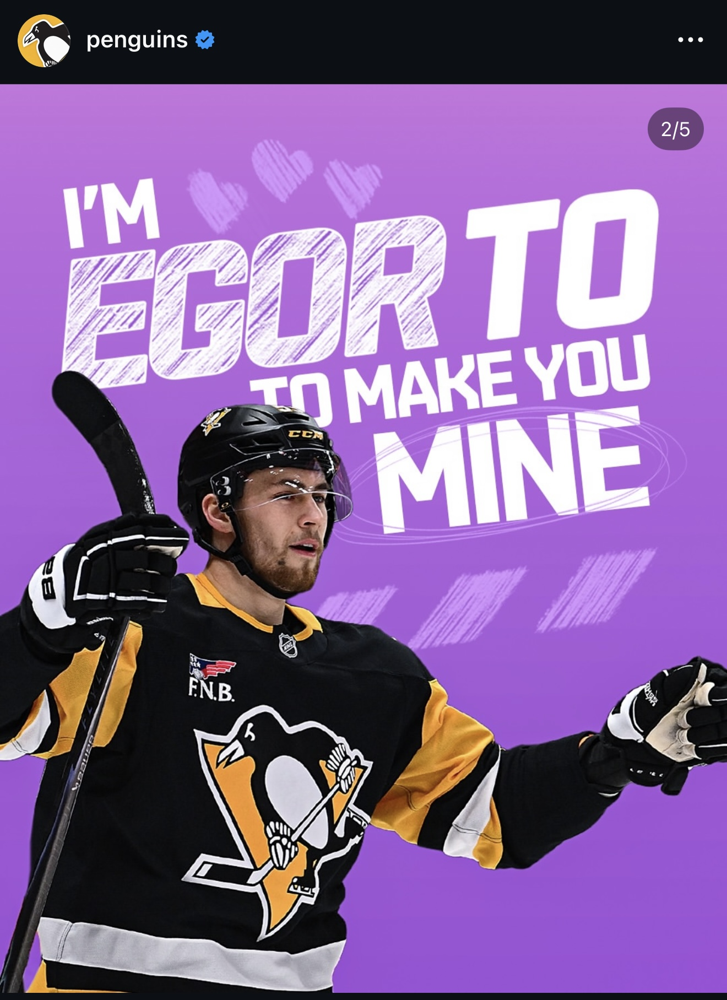
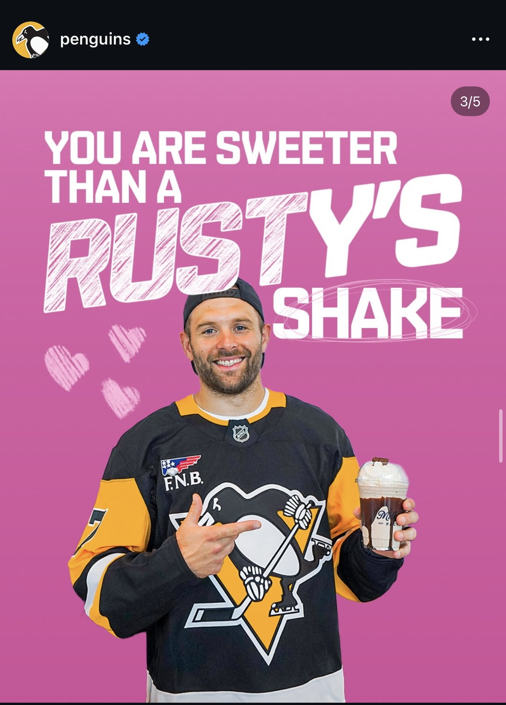

Portfolio
Pittsburgh Penguins
3D Geno Post
When this 3D trend began taking off, I decided to take my shot at it. I was able to add a goal celebration in the background and the CTA was to promote ticket sales to a home game. The post was one of our top posts on Instagram of the week and it was one of the first times I saw my work as an intern on the Penguins' page!

Social stats:
- Views: 348,520
- Likes: 18k
Malkamania shots
At practice I was able to score front-row tickets to the Malkamania show. I shot these photos of Geno on the ice and then posted them to our X!

Social stats:
- Impressions: 41,077
- Engagements: 6,310
Be the Penguin
Sometimes, the simpler the better. When I first saw this trend beginning, I knew we had to hop on it. I was able to petition for us to jump on the trend and create the post myself! It ended up being one of our top posts on Instagram of the week and proved the effectiveness of being early to trends.

Social stats:
- Views: 537,392
- Likes: 43k
The Art of Cropping
Another trend alert! When the "art of cropping" trend began popping off, I jumped on it and created some edits featuring fan reactions. This was a lot of fun and helped put a spin on some photos we didn't utilize in game!

Social stats:
- Views: 381,166
- Likes: 19k
Fan Appreciation Night
For our Fan Appreciation Night, I was able to capture our on-ice ceremony after the game. I was able to capture content for X, Instagram, FaceBook, and TikTok. My favority piece of content was when Tanger gave his jersey to one of his biggest fans! I love the ability to capture moments that have an impact bigger than the game.

Social stats:
- Views: 256,279
- Likes: 17k
Valentines Day
I was able to put my creativity to work and come up with a lot of catchy phrases for our Valentines posts! These two were my favorites that I came up with, and I was even able to combine the Rusty one with one of our partnerships (The Milkshake Factory)!


Social stats:
- Views: 373,491
- Likes: 23k